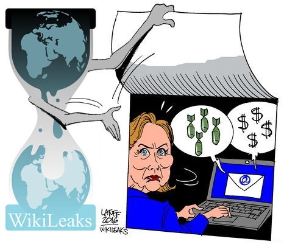
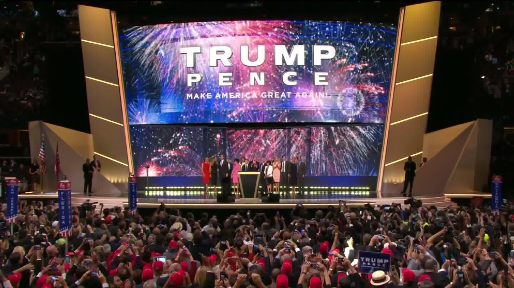
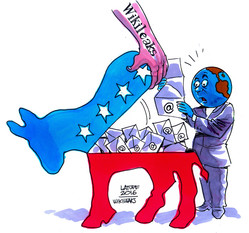
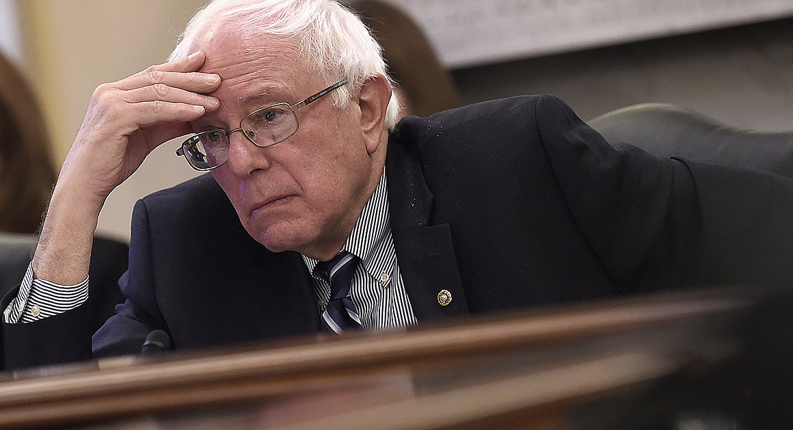
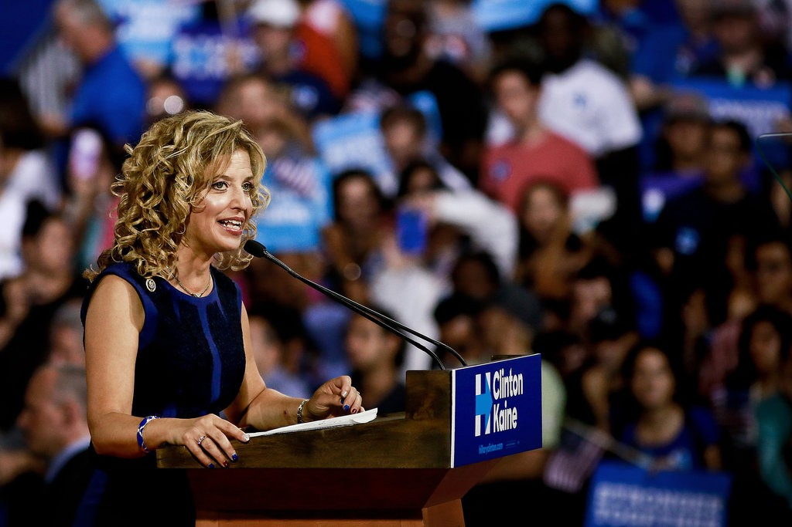
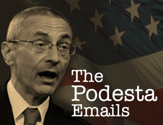
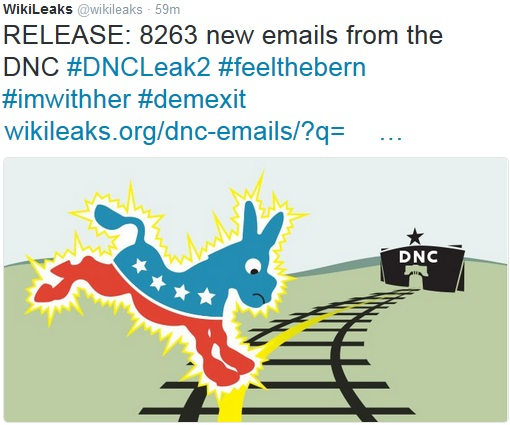
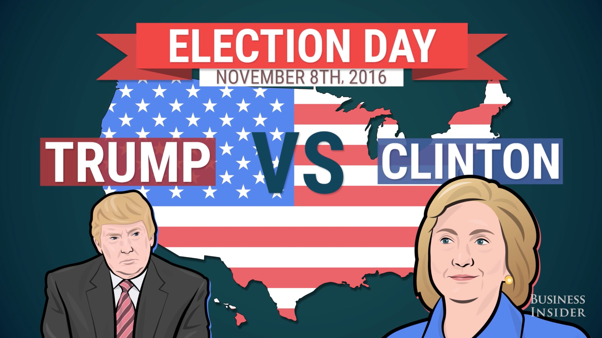

How Russia hacks democrats?
August 28th, 2018
By Didier BERNAUDEAU
View online at https://git.io/fAO1d
Keyboard Shortcuts
| Full Screen | F |
| Next Slide | Space bar |
| Slide Notes | S |
| Thumbnail View | Esc |
Part I
Flashback to United States presidential election 2016
Wednesday 16 March, 2016
WikiLeaks launched a searchable archive for over 30 000 mails and attachments sent to and from Hillary Clinton's private email server while she was Secretary of State.
Thursday 21 July, 2016
Donald Trump officially became the Republican Party’s presidential nominee during the Republican National Convention in Cleveland
Friday 22 July, 2016
WikiLeaks release, in a database, 19 252 emails from the US Democratic National Committee
Guccifer 2.0 claimed responsibility for a hacking on DNC
DNC staffers mocked the Bernie Sanders' campaign
B. Marshall wanted Bernie Sanders asked about God

Brad MARSHALL
From:MARSHALL@dnc.org
To: MirandaL@dnc.org, PaustenbachM@dnc.org,
DaceyA@dnc.org
Date: 2016-05-05 03:31
Subject: No shit
_________________________________________________________
It might may no difference, but for KY and WVA can we
get someone to ask his belief. Does he believe in a God.
He had skated on saying he has a Jewish heritage. I
think I read he is an atheist. This could make several
points difference with my peeps. My Southern Baptist
peeps would draw a big difference between a Jew and an
atheist.Debbie Wasserman Shultz called
Jeff Weaver a "damn liar" and a "scummy"

Debbie Wasserman Shultz Chairman of the DNC
Lamentations that Sanders is not a democrat
Debbie Wasserman Shultz
From:hrtsleeve@gmail.com
To: PaustenbachM@dnc.org
CC: MirandaL@dnc.org
Date: 2016-04-24 17:25
Subject: Re: Politico - Sanders: Democratic Party hasn't been
fair to me
_________________________________________________________
Spoken like someone who has never been a member of the
Democratic Party and has no understanding of what we do.
DWSMark Paustenbach built a narrative to undermine Bernie

Mark Paustenbach National press secretary for the DNC
From:markpaustenbach@gmail.com
To: mirandal@dnc.org
Date: 2016-05-21 22:23
Subject: Bernie narrative
______________________________
Wondering if there's a good Bernie narrative for a story, which
is that Bernie never ever had his act together, that his campaign
was a mess.
Specifically, DWS had to call Bernie directly in order to get the
campaign to do things because they'd either ignored or forgotten
to something critical.
She had to call Bernie after the data breach to make his staff to
respond to our concerns. Even then they didn't get back to us,
which is why we had to shut off their access in order to get them
to finally let us know exactly how they snooped around HFA's data.
Same was true with the standing committee appointments. They
never got back to us with their names (HFA and even O'Malley got
there's in six weeks earlier) for the committees. So, again, the
chair had to call Bernie personally for his staff to finally get
us critical information. So, they gave us an awful list just a
few days before we had to make the announcements.
It's not a DNC conspiracy, it's because they never had their act
together.Saturday 23 July, 2016
Brad Marshall apologizes, on Facebook, for email on Sanders’ religion
I deeply regret that my insensitive, emotional emails would cause embarrassment
to the DNC, the Chairwoman, and all of the staffers who worked hard to make the
primary a fair and open process. The comments expressed do not reflect my
beliefs nor do they reflect the beliefs of the DNC and its employees. I
apologize to those I offended.Sunday 24 July, 2016
Debbie Wasserman Schultz resigned her position as chairperson of the DNC.
Monday 25 July, 2016
Hillary Clinton officially became the Democratic Party’s presidential nominee.
October 7, 2016
WikiLeaks has released more than 50 000 emails stolen from the private email account of Hillary Clinton's campaign chairman, John Podesta.
November 6, 2016
WikiLeaks released a second batch of DNC emails,
adding 8 263 emails to its collection.
November 8, 2016
US Election Hillary Clinton Vs Donald Trump
January 20, 2017
Donald Trump's Inauguration Ceremony
Part 2
Bear vs Donkey
Friday 13 july 2018

Robert Mueller
- Robert Mueller was Director of the FBI from 2001 to 2013.
- Head of the Special Counsel investigation of Russian interference in the 2016 United States elections.
- Mueller's indictment details hacks on state election systems.
12 Russian intelligence officers are Indicted
- VIKTOR BORISOVICH NETYKSHO
- BORIS ALEKSEYEVICH ANTONOV
- DMITRIY SERGEYEVICH BADIN
- IVAN SERGEYEVICHY ERMAKOV
- ALEKSEY VIKTOROVICH LUKASHEV
- SERGEY ALEKSANDROVICH MORGACHEV
- NIKOLAY YURYEVICH KOZACHEK
- PAVEL VYACHESLAVOVICH YERSHOV
- ARTEM ANDREYEVICH MALYSHEV
- ALEKSANDR VLADIMIROVICH OSADCHUK
- ALEKSEY ALEKSANDROVICH POTEMKIN
- ANATOLIY SERGEYEVICH KOVALEV
GRU
a.k.a. Main Intelligence Directorate
- The GRU had multiple units engaged in cyber operations :
- Unit 26165 managed by VIKTOR BORISOVICH NETYKSHO
- Unit 74455 managed by ALEKSANDR VLADIMIROVICH OSADCHUK
Fancy Bear
a.k.a. APT28
- A cyber espionage group
- Could be associated with the Russian military intelligence agency (GRU)
Operating mode
Phase 1 - Spearphising
- Source:
- used the account “john356gh” at an online service
- Russia-based email account hi.mymail@yandex.com
- Spearphishing emails:
- Email look like a security notification from Google instructing the user to change his password by clicking the embedded link.
- Link to “hillary-clinton-favorable-rating.xlsx” which redirected the recipients’ computers to a GRU-created website
Operating mode
Phase 2 - Malware
- X-Agent malware implanted on the DCCC network (keylogger and screenshot functions)
- Information are transmitted to a GRU-leased server located in Arizona
- "AMS panel" is an administration tool for "X-Agent"
- Hacked into the DNC network from the DCCC network using stolen credentials
- “X-Tunnel" is used to send documents outside the DCCC and DNC networks through encrypted channels
Conclusion
- Alter the course of events in the U.S. by manipulating public opinion
- Potential for False Flag Operations in the DNC Hack
- Security awareness
- Detect data leakage (Cyber Angel)
- Get ready for data breach crisis communication